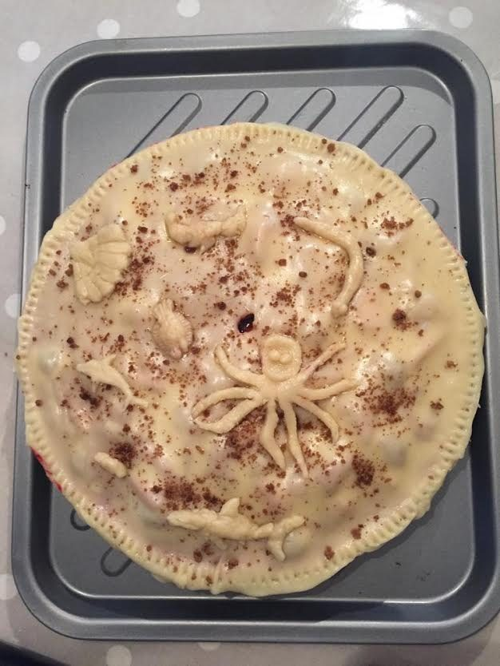
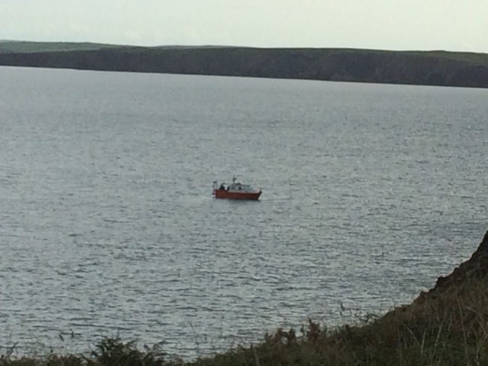
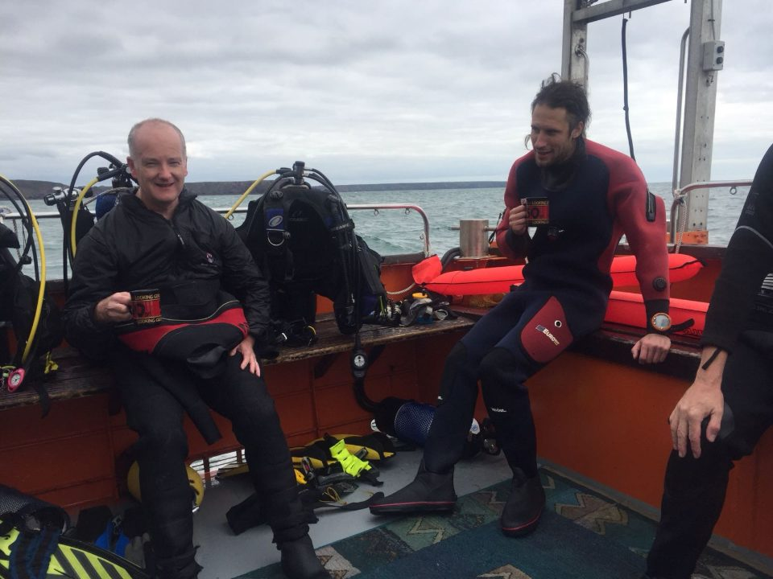
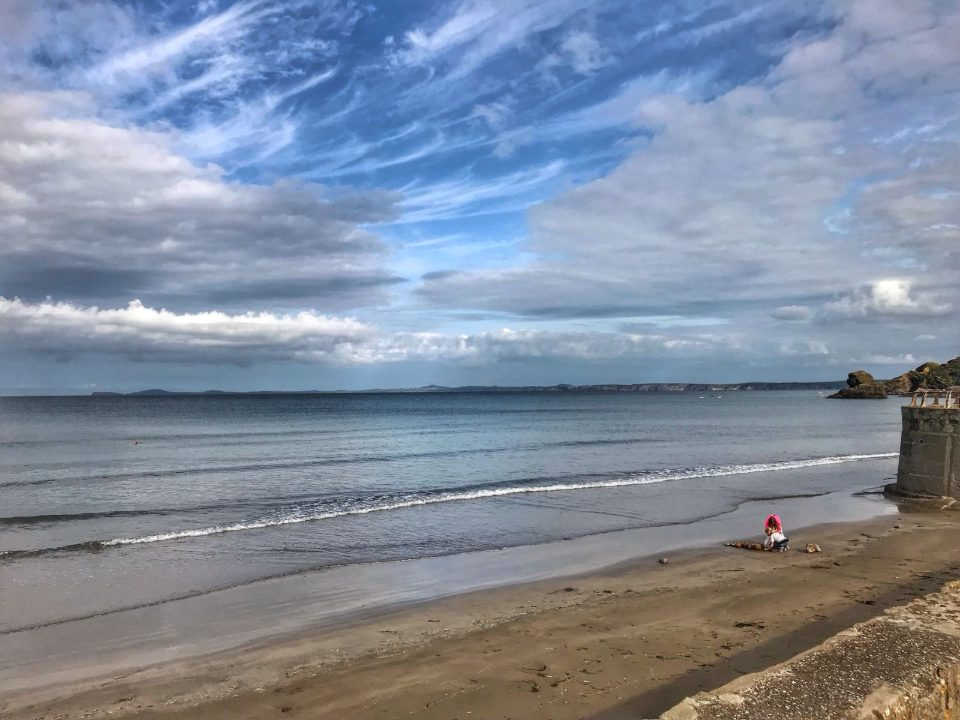

Pembrokeshire August 2018
We arrived at our cottage in St Ishmaels on the Pembrokeshire coast on a bright sunny afternoon. Sadly the weather wasn’t quite as kind the following morning, with stereotypical Welsh rain and too much wind for the dive boat to go out. But we took the opportunity to explore the area, with a trip up to St David’s – as well as an unscheduled trip to Halfords to replace a broken car battery… And we even cooked up a curry feast, followed by a blackberry and apple pie, decorated with an artfully crafted octopus!

The weather was a bit breezy for the rest of the week (although no more rain and lots of sun), which meant the diving was spread over the week. Most of us managed to get in a good three days though. And the diving was great. The boat was very spacious, and the skipper Brian really knew his stuff, having dived here himself for years. He gave detailed briefings, and we were treated to lots of sealife. Unfortunately, the vis wasn’t great due to the weather, but we still managed to see plenty. The highlight for me were all the crustaceans, including lobsters, lots of different crabs, squat lobsters, shrimp and huge crayfish. Akiko and I even sotted a lobster who had clearly just finished a rather tasty meal of one of these crayfish, judging from the shell scattered around! There were also lots of fabulous sponges – more varieties and much bigger than I’ve seen in UK waters before. Another great spot was the huge scallops, half buried in the sand and busy feeding. There were plenty of flatfish and gobies, the odd tompot blenny, and the occasional wrasse appeared out of the gloom!


And when we couldn’t dive, we made the most of everything this beautiful place had to offer. We explored the stunning coastal path, with craggy cliffs, practically deserted and dramatic beaches, baby seals in the coves, and lots of birds. There was swimming in the sea, body boarding, and cycling. And some of us made the most of the wind to practise our kite-flying skills! It also turned into a bit of a gourmet trip as we made the most of the self-catering, with home-made pizza, pasta, and yet more blackberry desserts!
